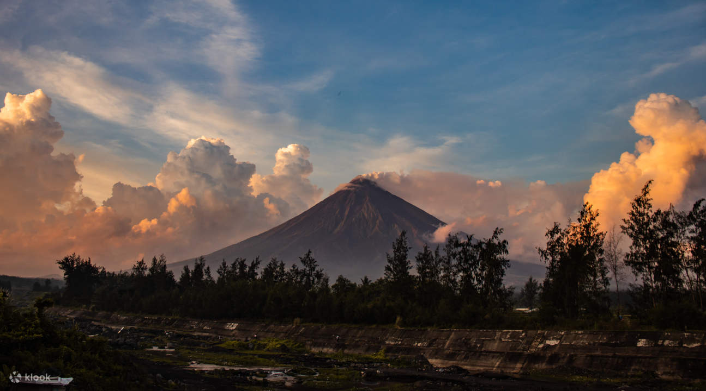

Mayon Volcano
The world's most perfect cone, and the most active volcano in the Philippines.
- Elevation
- 2,463 m
- Recorded eruptions
- 50+
- First recorded
- 1616
- Permanent danger zone
- 6 km
History
Renowned for its almost perfect conical shape, Mayon is considered one of the most active volcanoes in the world.
Mayon Volcano rises 2,463 meters above sea level in the province of Albay, in the Bicol Region of the Philippines. Its formation began roughly 20,000 years ago, as successive eruptions built up the symmetrical cone it is famous for.
Mayon has erupted more than 50 times in recorded history, making it the most active volcano in the Philippines. The first recorded eruption dates back to 1616.
Notable eruptions
-
1814
The burial of Cagsawa
The most devastating eruption in Mayon's history buried the town of Cagsawa and killed over 1,200 people. The church ruins remain today as a memorial.
-
1897
Widespread destruction
Claimed approximately 400 lives and caused significant damage to the surrounding areas.
-
1993
Sudden pyroclastic flows
Resulted in 75 fatalities, including farmers and scientists caught by pyroclastic flows.
-
2018
Weeks of lava fountaining
Prompted the evacuation of over 80,000 residents, with continuous lava fountaining and ash emissions for several weeks.

The Legend of Daragang Magayon
According to local folklore, the volcano is named after the maiden Daragang Magayon, meaning "beautiful maiden" in Bicolano.
Legend tells of her tragic love story with the warrior Panganoran, whose deaths led to the formation of the volcano. The tale remains deeply embedded in Bicolano culture and identity.
Monitoring and safety
Mayon is closely monitored by the Philippine Institute of Volcanology and Seismology (PHIVOLCS), which maintains a permanent danger zone of 6 to 8 kilometers around the summit, strictly off-limits to the public.
Despite its dangers, Mayon remains a source of pride for Filipinos, especially the people of Albay. Its perfect cone continues to draw tourists, scientists and adventurers from around the world.
Quick facts
- Location
- Albay, Bicol Region
- Height
- 2,463 m (8,081 ft)
- Type
- Stratovolcano
- Historical eruptions
- Over 50
- Most destructive
- 1814
- Most recent major
- 2018
Gallery
Nine views of the volcano, from dawn light to lava flows.
Things to do around Mayon
From ATV rides on old lava trails to the Cagsawa Ruins, see what awaits in Albay.